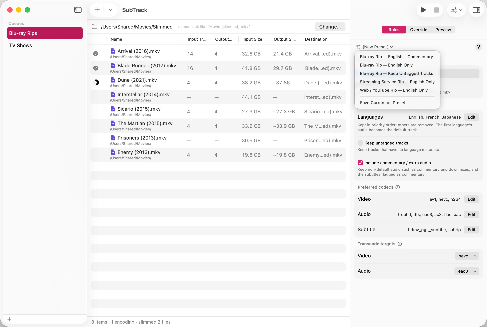

Una preimpostazione è un insieme di regole di conservazione con un nome. Una volta capito che cosa serve a un certo tipo di rip, salvarlo ti evita di doverlo stabilire di nuovo.


Per applicarne una, sceglila dallo stesso menu. La coda ne assume subito le regole.
È l’aspetto di SubTrack più utile da capire, perché la prima volta sembra un errore.
Il menu delle preimpostazioni non mostra l’ultima su cui hai fatto clic, ma quella a cui le regole attuali corrispondono. Applica «Rip Blu-ray – Solo inglese» e aggiungi una lingua: il menu smette di mostrare «Rip Blu-ray – Solo inglese», perché le regole non sono più quelle di quella preimpostazione. Mostra invece «(Nuova preimpostazione)»: hai un insieme di regole che non corrisponde ad alcuna preimpostazione salvata.
Se rimuovi di nuovo quella lingua, il menu torna a mostrare «Rip Blu-ray – Solo inglese» senza che tu debba applicare nulla. Non si è perso niente e la preimpostazione non è mai stata modificata: applicare una preimpostazione copia le sue regole nella coda, invece di collegare la coda alla preimpostazione.
«(Nuova preimpostazione)» è quindi un invito, non un avviso: salva queste regole se vuoi conservarle.
SubTrack include cinque preimpostazioni iniziali, raggruppate in base all’origine del file: è questo che decide sia quali tracce vale la pena mantenere sia quali codec vale la pena copiare.
Ciò che distingue maggiormente le preimpostazioni è se le tracce senza lingua vengono mantenute. I dischi degli studi contrassegnano tutto, quindi le prime due le rimuovono come superflue; i rip dal web e dallo streaming hanno molto spesso un’unica traccia audio senza lingua che costituisce l’intera colonna sonora, quindi le altre le mantengono. Per maggiori informazioni, consulta Scegliere quali lingue mantenere.
Le preimpostazioni iniziali sono preimpostazioni normali fin dal momento in cui compaiono: SubTrack non le protegge né le ripristina. Modificale liberamente o elimina quelle che non usi.
Eliminare una preimpostazione non influisce su nessuna coda. Una coda che usava quelle regole le mantiene, perché ne ha una copia e non un riferimento: il suo menu delle preimpostazioni inizia semplicemente a mostrare «(Nuova preimpostazione)».